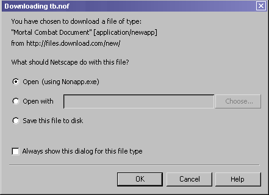
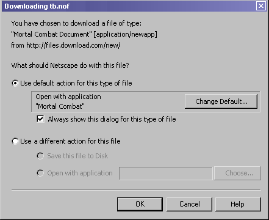
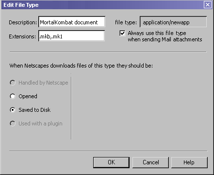
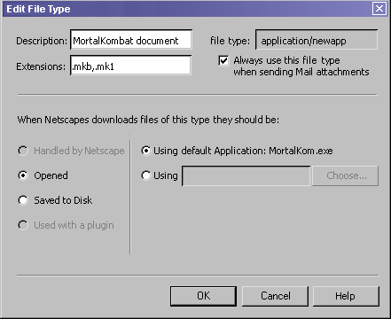
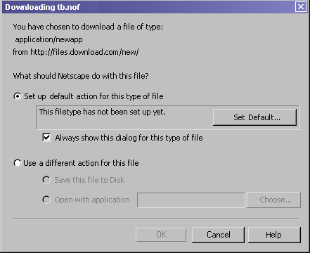
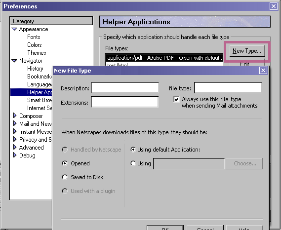
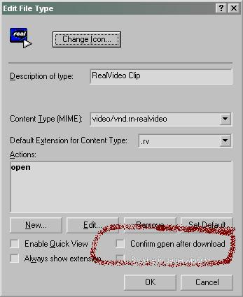
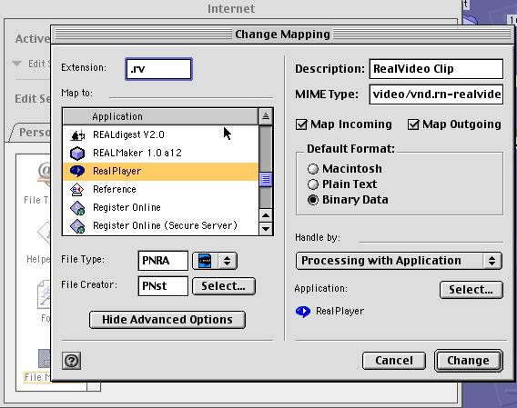

| Mojo Navigator |
UI
Specification
|
|
Helper Applications Setup send feedback to the component specific newsgroup |
Last
Modification:
|
| Author:
German W. Bauer Initial Creation Date: 25 January 2001 |
Status: |
|
|
Feature Team
|
based on usability feedback and testing the design below we are considering going back to a simplified design similat to the 4.x design as shown below:

this design would be used in place of images 1 and 4 shown below.
Once a filetype is has an entry in the helper apps preferences or it has an association that can be retrieved from the operating system and a file of the same type is downloaded, the dialog enables two main choices:

Clicking on Set Default... will open a new dialog that lets the user set the defaults for that MIME type:

The top area of this dialog lets the user adjust the description, the extensions associated with that MIMR type (TBD: Mac users may want to set type and creator codes here). The checkbox "Always use this MIME type when sending Mail attachments" lets users map this MIME-types to files of this type that get attached to Mail messages.(Note: this prefs really belongs into a general section, not under Navigator)
The bottom area of this dialog lets the user set the default action. 4 possibilities are available:
This screenshot below shows what this dialog looks like when the user chooses the option "Open this file". Two choices are displayed:

Completing this setup will get the user back to the dialog from before except that that dialog has been changed to reflect the default settings that the user just edited. (see below in next section)
When a filetype is encountered for the first time and has no OS file type association, the user will see a dialog that lets him or he set up what to do this file in the future. That directs him towards the "Edit file type" window from the Helper Applications preferences.
OK button is disabled until either a default is set or "Use a different action for this file" is chosen.
Note: the dialog is similar in design to that design above being used when a file type either has an OS default association or the file type has been saved in Netscape's file database. so the user recognizes it and can leverage his or her knowledge on how the dialog works.


In certain cases the vendor of a helper app may desire to not have the user go through having to see the first dialog at all. This is the case e.g with streaming video applications such as from RealVideo. In those cases the system setting depicted below is usually set to not "confirm open after download" in Win32. We should "listen to" this setting and bypass the first dialog altogether. does MacOS does have a similar system setting in its Internet control panel that we should also listen to ("Processing with Application").


Possible assumptions that can be made to simplify choices:
- Never write-modify an OS setting, setting is only used in Netscape
- The Netscape file types database does not replicate the OS file associations,
it only records when files are set up differently for use with Netscape.
- if this implimented in stages, the dialog could be initially released without
plugin integration
TBD:
On MacOS this dialog could be extended to give access to the OS's "File Exchange" control panel which allows users to map downloaded file to Mac files using proper creator type and document type.
previous iterations of this design